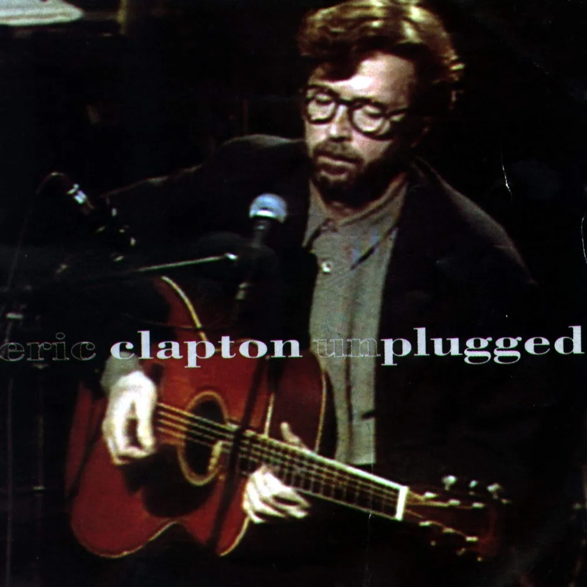

안녕하세요, 라보엠입니다.
오늘은 에릭 클랩튼(Eric Clapton)의 대표곡이자, 전 세계 수많은 이들의 마음을 울린 ‘Tears in Heaven’을 소개해드리겠습니다. 이 곡에는 한 인간이 겪은 깊은 비극과, 그것을 예술로 승화해낸 삶의 이야기가 진솔하게 녹아 있습니다. ‘Tears in Heaven’은 1991년, 에릭 클랩튼이 사랑하는 네 살 아들 코너를 사고로 잃은 뒤 세상에 나왔습니다. 코너는 뉴욕의 고층 아파트에서 추락해 세상을 떠났고, 클랩튼은 아이를 잃은 깊은 상실감에 긴 슬픔의 시간을 보냈습니다. 한동안 음악을 잡지 못하던 그는 이 곡을 통해 비로소 상처를 마주하고 슬픔을 노래로 담았습니다.

Tears in Heaven 음악적 특징
‘Tears in Heaven’은 잔잔한 어쿠스틱 기타와 절제된 멜로디, 애절한 보컬이 어우러져 있습니다. 첫 소절 “Would you know my name, if I saw you in heaven?”에서부터, 사랑하는 사람과의 영원한 이별이 그대로 전해집니다. 세 개의 절과 브릿지로 이뤄진 이 곡에서, 클랩튼은 아들에게 용서를 구하는 마음, 다시 만날 수 있을지에 대한 두려움과 희망을 절실히 표현하고 있습니다.
특히 “I must be strong, and carry on, 'cause I know I don't belong here in heaven”이라는 후렴은, 슬픔에 주저앉고 싶지만 언젠가는 극복해내야만 한다는 다짐이 고스란히 담겨 있습니다.
가사에 깃든 후회와 위로
클랩튼의 가사에는 아들을 잃은 후회의 감정과 함께, 짧게나마 함께했던 소중함이 진하게 묻어납니다. “Would you hold my hand, if I saw you in heaven? Would you help me stand, if I saw you in heaven?”과 같이, 아들과의 기억을 더듬으며 아버지로서의 내면을 다시 묻는 장면들이 이어집니다.
곡의 마지막에서는 “Beyond the door, there’s peace, I’m sure, and I know there’ll be no more tears in heaven”이라는 구절을 통해, 이별을 딛고 평화에 닿으려는 클랩튼의 조용한 믿음이 전해집니다.
음반 발매와 음악적 성취
이 곡은 1991년 영화 ‘Rush’의 삽입곡으로 처음 세상에 나왔고, 1992년 에릭 클랩튼의 ‘MTV Unplugged’ 라이브 버전으로 재발매되었습니다. 발매 직후 전 세계 차트에서 상위권을 차지하며 많은 이들의 사랑을 받았습니다. 미국 빌보드 핫100 2위, 영국 싱글차트 5위 등 눈에 띄는 성과를 세웠고, 1993년 그래미 어워드에서는 올해의 노래, 최우수 남성 팝 보컬, 올해의 레코드 등 주요 부문을 모두 수상했습니다.
맺음말
에릭 클랩튼의 ‘Tears in Heaven’은 슬픔뿐만 아니라 상실을 겪고 있는 이들에게 큰 위로와 공감의 메시지로 다가옵니다. 에릭 클랩튼은 “음악이 내 마음을 치유하는 도구가 되었고, 실제로 위안을 얻었다”고 밝힌 바 있습니다. 이 곡은 전 세계의 장례식, 추모 행사, 개인의 상실과 치유의 순간마다 여전히 많이 울려퍼지고 있습니다.이 노래는 인간적인 비극, 회복, 그리고 다시 살아갈 의지를 담은 유일무이한 노래입니다. 수십 년이 지난 지금도 많은 이에게 깊은 울림과 위로를 주는 이 곡을 들으며, 사랑과 이별의 의미를 다시 한 번 생각해보는 시간을 가져보시기 바랍니다.